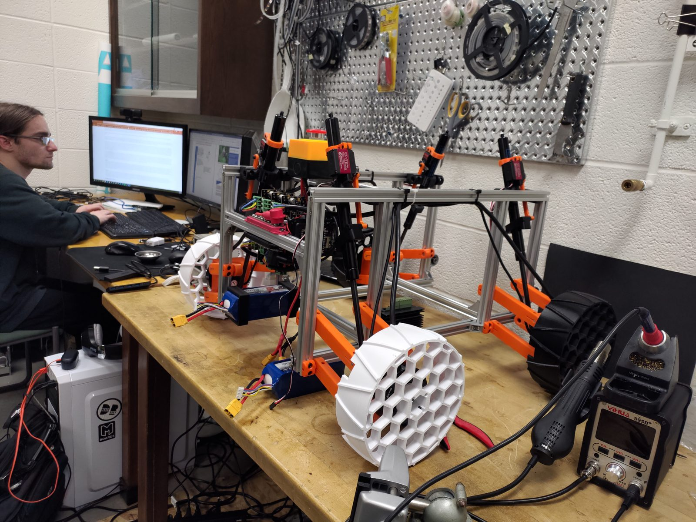
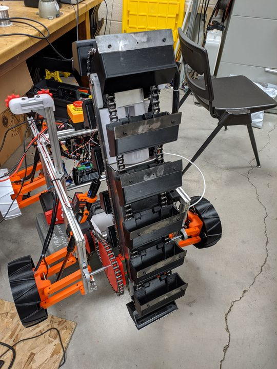
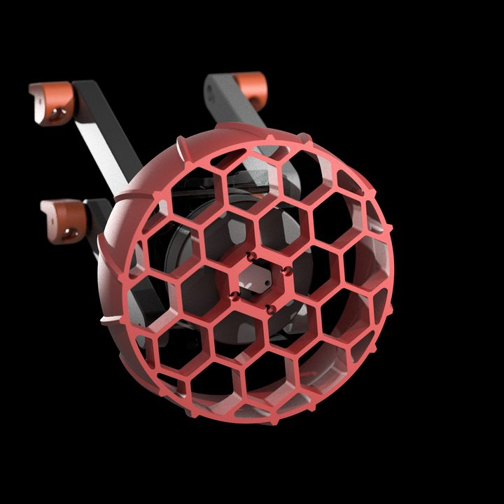
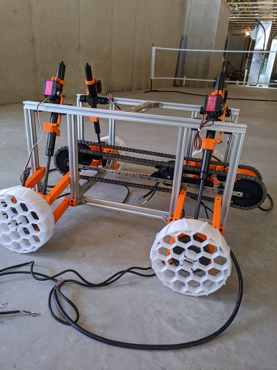
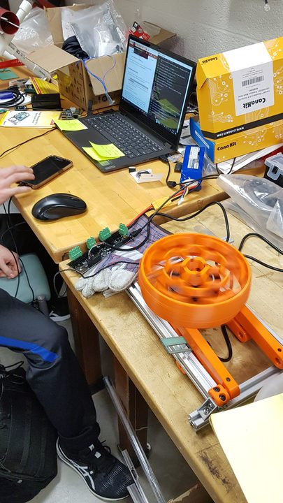

2020 – 2021
UWRF Lunabotics Rover
A NASA moon-mining rover that my roommate and I started at UW–River Falls. I did the mechanical design: closed-loop hub-motor wheels, a deployable wheelbase and a bucket-chain excavator.
- Autodesk Inventor
- BLDC / ODrive
- Gearbox design
- Mechanisms
- Team founder

Lunabotics is NASA's competition for lunar mining robots. My roommate and I started a team at the University of Wisconsin–River Falls. COVID cancelled the in-person event, but we presented the robot to the judges over video. I led the mechanical design. (I'm now in the early stages of a new Lunabotics team for 2027.)



Drive
Each wheel is driven by a 900 W brushless gimbal motor with a 600 PPR rotary encoder, both wired to an ODrive for closed-loop control. My first wheel used a double leaf spring between rim and hub, but it (and its single-extrusion mount) didn't hold up. I switched to rigid wheels with a hexagonal pattern in place of spokes.
To get around the size limits, I designed a wheel deployment system that gives the rover a wider wheelbase than competitors once it's on the field. A servo on each wheel releases a four-bar linkage, which a 40 lb constant-force gas spring then drives out.





Excavator
The digger is a bucket-chain excavator driven by a 4 kW BLDC motor through reduction belts. The whole assembly drives itself up and down a pivot gear on two lead screws to set the dig angle. I designed a scalable two-stage planetary gearbox for the T8 lead screws. It worked on the first try, and I reused it elsewhere on the robot. The printed buckets have metal cutting edges and attach to roller chain at regular intervals.


